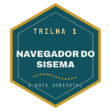
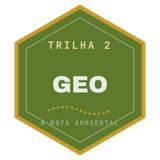
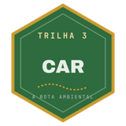
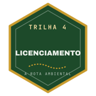
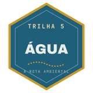
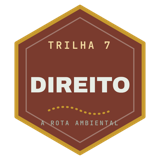

Como é o curso
Menos teoria solta. Mais tela, caso real e fonte.
Tela real dos sistemas
Ecossistemas, SLA, SOUT, SEI, CAR, IDE-Sisema e sistemas federais, clique a clique, na versão que está no ar hoje.
O caminho de volta
Cada documento autorizativo parte de uma decisão publicada (portaria, certificado, parecer) e volta até o que foi preenchido para ela sair.
Manual oficial conferido
Toda aula de passo a passo traz o manual do órgão, com versão e link, e o selo "Manual conferido em mm/aaaa".
Aulas de 5 a 9 minutos
Uma tarefa por aula, para assistir no celular e voltar quando precisar no dia a dia.
Checklist em PDF por aula
O que conferir antes de protocolar, para levar para o cliente e para o campo.
Trilhas, medalhas e certificado
Quiz por trilha, pontos, medalhas para o LinkedIn, certificado de 40 horas e a Prova Plus para o certificado "com distinção".
O que você não vai encontrar aqui
- Aula de sistema que já mudou: antes de cada aula conferimos se o caminho é o atual (ex.: a outorga saiu do SEI e foi para o SOUT).
- Regra sem fonte: cada passo cita a norma, o artigo ou o link oficial.
- Promessa de "aprovo o seu processo": o curso ensina o caminho; a decisão é do órgão.
- Dados pessoais expostos: os casos reais seguem a LGPD.
As trilhas
Dez trilhas, do primeiro acesso ao serviço que gera renda.
0 · Comece por aqui
- Mapa dos serviços e da renda do consultor em MG
- O celular como ferramenta de campo, com o app Chão Geo MG

1 · Órgãos e sistemas
- Quem faz o quê no Sisema
- Consultar decisões, pareceres e autos de infração
- SEI: protocolo e acompanhamento

2 · Geo
- KML, SHP e SIRGAS 2000: o que o órgão confere
- Camadas do IDE-Sisema e critério locacional

3 · CAR
- Inscrição, retificação e troca de titular
- Responder à notificação da análise

4 · Licenciamento
- Porte, potencial poluidor e modalidade (DN 217)
- Formalização no SLA
- Lei 15.190/2025 para o consultor

5 · Água 1ª aula gravada
- Pedido de outorga no SOUT, com casos reais
- Uso insignificante, poço e barramento
6 · Flora
- Árvores isoladas, taxa e reposição
- CAP/DAP e volumetria, com planilha
- Sinaflor, DOF e supressão

7 · Direito ambiental aplicado
- Defesa administrativa e recurso
- Responsabilidade penal, civil e administrativa
8 · Fazer render
- Quanto cobrar, proposta e contrato
- Achar cliente e serviço recorrente
9 · Federal
- CTF/AIDA, CTF/APP, RAPP e TCFA no Ibama
- ANA e MTR no SINIR: serve para todo o Brasil
Grade em produção: as aulas entram trilha por trilha, e a ordem pode mudar conforme as normas e os sistemas.
Para quem é
É para você se…
- é consultor, engenheiro, biólogo, geógrafo ou técnico e quer fazer o serviço ambiental em MG;
- está começando e trava nos sistemas e nas siglas;
- já atua e quer se atualizar com as mudanças de norma e de sistema;
- é de empresa ou de prefeitura e quer acompanhar o próprio processo.
Não é para você se…
- procura atalho para "passar" processo sem cumprir a norma;
- quer só teoria, sem abrir sistema nem ler documento;
- atua só fora de MG e não precisa da parte estadual (a Trilha 9 é federal).
Bônus
Ferramentas para o dia a dia do consultor.
Acervo DN 217
O que os pareceres públicos costumam conferir em cada atividade, os motivos de indeferimento e os documentos do SLA.
Simulador de enquadramento
Porte × potencial poluidor, classe e modalidade, para treinar antes de formalizar.
Mapa dos manuais oficiais
Link, versão e o que mudou em cada manual dos sistemas, atualizado todo mês.
Planilhas-ferramenta
CAP/DAP e volumetria, taxa florestal e reposição, vazão e uso insignificante, precificação.
Jogos para aprender em breve
Desafios, cartas e simulações para fixar normas, siglas e o funcionamento do órgão com pontos e ranking.
Comunidade
Dúvidas pelo tema da aula, com respostas da equipe.
Quem conduz
Francisco de Assis · O Analista Ambiental
Engenheiro florestal (UESB), mestre em Tecnologia, Ambiente e Sociedade (UFVJM) e doutorando na UFMG, onde pesquisa modelagem preditiva de desmatamento com inteligência artificial.
Gestor ambiental de carreira do sistema estadual de meio ambiente de Minas Gerais desde 2014, com centenas de processos de licenciamento analisados linha a linha e mais de 1.500 perícias e vistorias. Preside a Comissão de Fiscalização Ambiental do IDAM (Instituto de Direito Ambiental).
O Analista Ambiental nasceu de uma percepção simples: a área ambiental é difícil não porque é complexa, mas porque quase ninguém se dá ao trabalho de explicar. A Rota Ambiental é esse trabalho, aula por aula. Trajetória completa.
O curso é feito em equipe, com professores convidados, e todo conteúdo tem a revisão dele. Transparência: as aulas usam avatar e voz gerados por inteligência artificial a partir do Francisco.
Duas formas de acesso
Anual
12 meses de acesso às aulas e às atualizações.
Vitalício (fundador)
Acesso sem prazo, na condição de fundador.
Os valores e as condições serão anunciados aqui e no Instagram @oanalistaambiental na reabertura das vendas.
Garantia de 7 dias: se não for para você, o valor é devolvido.
Depoimentos
Depoimentos: em breve
Os relatos de quem fizer a versão 2.0 aparecerão aqui.
Lista de espera
Receba a data de abertura e o valor de fundador.
Perguntas frequentes
Já sou aluno da Rota Ambiental. Preciso pagar de novo?
Não. Quem já é aluno recebe a versão 2.0 sem custo.
Preciso saber alguma coisa antes?
Não. A Trilha 0 explica o formato, e as aulas partem do primeiro acesso aos sistemas.
Serve para quem é de fora de Minas Gerais?
A maior parte é de MG. A Trilha 9 (Ibama, ANA e SINIR) serve para todo o Brasil.
Tem certificado?
Sim, de 40 horas, ao concluir as aulas e os quizzes. Quem tira nota alta na Prova Plus recebe o certificado "com distinção".
As aulas usam inteligência artificial?
Sim: o avatar e a voz são gerados por IA a partir do Francisco. O conteúdo é pesquisado nas normas e nos manuais oficiais e revisado por ele.
Quando abre?
As vendas reabrem em novembro de 2026. Entre na lista de espera abaixo para receber a data.